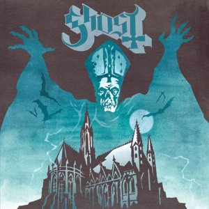
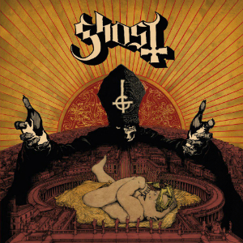
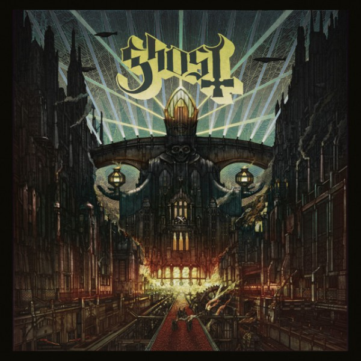

Discographie
Albums
Opus Eponymus
Sorti le 18 octobre 2010L'écriture des chansons remonte à trois ans avant la sortie de l'album, entre 2007 et 2008, alors que le groupe était à peine en train de se former. Néanmoins la toute première chanson fut Stand By Him, qui remonte à 2006, bien avant que le groupe se soit formé. L'auteur principal, A Ghoul Writer, joua un riff de guitare en compagnie des futurs membres de Ghost, qui l'inspira totalement pour la suite de la chanson et la ligne directrice même du groupe.
Liste des titres
- Deus Culpa
- Con Clavi Con Dio
- Ritual
- Elizabeth
- Stand By Him
- Satan Prayer
- Death Knell
- Prime Mover
- Genesis
Infestissumam
Sorti le 10 avril 2013 Liste des titres
- Infestissumam
- Per Aspera Ad Inferni
- Secular Haze
- Jigolo Har Megiddo
- Ghuleh/Zombie Queen
- Year Zero
- Idolatrine
- Body And Blood
- Depth of Satan's Eyes
- Monstrance Clock
Meliora
Sorti le 21 août 2015 Liste des titres
- Spirit
- From The Pinnacle To The Pit
- Cirice
- Spöksonat
- He Is
- Mummy Dust
- Majesty
- Devil Church
- Absolution
- Deus In Absentia
Singles et EP
- 20 juin 2010 : Elizabeth
- 18 janvier 2013 : Secular Haze
- 14 avril 2013 : Year Zero
- 19 novembre 2013 : If You Have Ghost
- 31 mai 2015 : Cirice
- 17 juillet 2015 : From The Pinnacle To The Pit
- 7 août 2015 : Majesty